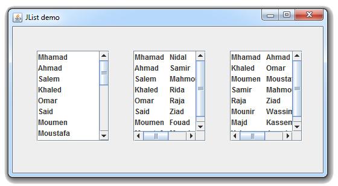

Java Swingالكلاس JList
مقدمة
الكلاس JList يستخدم لإضافة قائمة (List) في واجهة المستخدم.
عند التعامل مع الـ List فأنت لا تضع فيها العناصر مباشرةً. بل تضع العناصر في الـ Model الخاصة بها.
إذاً سيكون عليك إنشاء كائن من الكلاس DefaultListModel و وضعه كـ Model لكائن الـ JList.
بعدها يمكنك إضافة العدد الذي تريده من العناصر في كائن الـ DefaultListModel و التي ستظهر بدورها في الـ List.
يمكنك أيضاً تحديد طريقة عرض العناصر بداخل القائمة, يمكنك جعلها تظهر أفقياً أو عامودياً.
و يمكنك وضعها بداخل JScrollPane لجعلها تظهر Scroll Bar عند الحاجة.
لا تقلق ستفهم كل شيء من الأمثلة.
بناؤه
public class JList<E>
extends JComponent
implements Scrollable, Accessible
كونستركتورات الكلاس JList
الجدول التالي يحتوي على كونستركتورات الكلاس JList.
| الكونستركتور مع تعريفه |
public JList()
ينشئ كائن من الكلاس JList يمثل List فارغة, أي لا تحتوي أي عنصر. |
public JList(E[] listData)
ينشئ كائن من الكلاس JList يمثل List فيها خيارات جاهزة.
مكان الباراميتر listData نمرر مصفوفة من أي نوع.
عناصر هذه المصفوفة هي التي ستظهر كخيارات في القائمة.
قد يرمي إستثناء في حال كانت المصفوفة listData فارغة, أي قيمها تساوي null. |
public JList(ListModel<E> dataModel)
ينشئ كائن من الكلاس JList يمثل List فيها خيارات جاهزة.
مكان الباراميتر dataModel نمرر كائن من الكلاس ListModel.
عناصر الكائن dataModel هي التي ستظهر كخيارات في القائمة.
يرمي الإستثناء IllegalArgumentException في حال كان كائن الـ dataModel فارغاً, أي قيمته تساوي null. |
دوال الكلاس JList
الجدول التالي يحتوي على بعض دوال الكلاس JList.
| الدالة مع تعريفها |
public void addListSelectionListener(ListSelectionListener listener)
تستخدم لتنفيذ أوامر معينة عند النقر على أي خيار موجود في كائن الـ JList الذي قام بإستدعائها.
مكان الباراميتر listener نضع كائن من الكلاس ActionListener و نفعل بداخله Override لدالة إسمها actionPerformed(ActionEvent ae). |
public E getSelectedValue()
ترجع قيمة العنصر الذي قام المستخدم باختياره في كائن الـ JList الذي قام بإستدعائها.
في حال قام المستخدم باختيار أكثر من عنصر, فإنها ترجع قيمة العنصر الذي يملك أصغر index بينهم.
في حال لم يقم المستخدم باختيار أي عنصر, فإنها ترجع القيمة null. |
public int getSelectedIndex()
ترجع رقم يمثل index العنصر الذي قام المستخدم باختياره في كائن الـ JList الذي قام بإستدعائها.
في حال قام المستخدم باختيار أكثر من عنصر, ترجع index أصغر عنصر بينهم. |
public int[] getSelectedIndices()
ترجع مصفوفة أرقام, كل رقم فيها يمثل index عنصر من العناصر التي قام المستخدم باختيارها في كائن الـ JList الذي قام بإستدعائها. |
public void setModel(ListModel<E> model)
تستخدم لتحديد Model كائن الـ JList الذي قام بإستدعائها.
مكان الباراميتر model نضع كائن من الكلاس ListModel.
ترمي الإستثناء IllegalArgumentException في حال كان كائن الـ dataModel فارغاً, أي قيمته تساوي null. |
public ListModel<E> getModel()
ترجع نسخة من كائن الـ ListModel الذي يستخدمه كائن الـ JList الذي قام بإستدعائها. |
public void setLayoutOrientation(int layoutOrientation)
تستخدم لتحديد طريقة ظهور العناصر بداخل كائن الـ JList الذي قام بإستدعائها.
مكان الباراميتر layoutOrientation نضع إحدى الثوابت الموجودة في الكلاس ListModel المخصصة لتحديد طريقة ظهور العناصر بداخل كائن الـ JList.
الثوابت التي يسمح باستخدامها هي:
JList.VERTICAL.
JList.VERTICAL_WRAP.
JList.HORIZONTAL_WRAP.
إفتراضياً, الثابت الذي يستخدم هو JList.VERTICAL.
ترمي الإستثناء IllegalArgumentException في حال كان الثابت المستخدم غير مناسب للدالة. |
public void setSelectionMode(int selectionMode)
تستخدم لتحديد طريقة ظهور العناصر بداخل كائن الـ JList الذي قام بإستدعائها.
مكان الباراميتر layoutOrientation نضع إحدى الثوابت الموجودة في الكلاس ListSelectionModel المخصصة لتحديد طريقة ظهور العناصر بداخل كائن الـ JList.
الثوابت التي يسمح باستخدامها هي:
ListSelectionModel.SINGLE_SELECTION.
ListSelectionModel.SINGLE_INTERVAL_SELECTION.
ListSelectionModel.MULTIPLE_INTERVAL_SELECTION.
إفتراضياً, الثابت الذي يستخدم هو ListSelectionModel.MULTIPLE_INTERVAL_SELECTION.
ترمي الإستثناء IllegalArgumentException في حال كان الثابت المستخدم غير مناسب للدالة. |
أمثلة شاملة
في جميع الأمثلة سنتعامل مع القائمة كالتالي:
سنقوم بتعريف كائن من الكلاس JList و الذي بدوره يمثل القائمة التي ستظهر في واجهة المستخدم.
سنقوم بتعريف كائن من الكلاس DefaultListModel و الذي سنستخدمه لتخزين العناصر التي ستظهر في القائمة.
سنقوم بربط كائن الـ DefaultListModel بكائن الـ JList. هنا يمكن ربطهما بطريقتين:
•من خلال وضع كائن الـ DefaultListModel في كونستركتور كائن الـ JList.
•من خلال إستدعاء الدالة setModel() و تمرير كائن الـ DefaultListModel لها كـ Argument.
سنقوم بتعريف كائن من الكلاس JScrollPane و نضع كائن الـ JList فيه, و بذلك نضمن ظهور Scroll Bar عند الحاجة.
في الأخير, سنقوم بوضع كائن الـ JScrollPane في النافذة, و الذي بدوره أصبح يحتوي على القائمة و جميع العناصر التي فيها.
المثال الأول
المثال التالي يعلمك طريقة إنشاء كائن من الكلاس JList يحتوي على عناصر.
شاهد المثال »
المثال الثاني
المثال التالي يعلمك طريقة تغيير نوع و حجم و لون خط عناصر كائن الـ JList.
شاهد المثال »
المثال الثالث
المثال التالي يعلمك طريقة معرفة عدد و قيم العناصر التي قام المستخدم باختيارها في كائن الـ JList.
هنا النتيجة تتغير مباشرةً أثناء إختيار العناصر من القائمة.
شاهد المثال »
المثال الرابع
المثال التالي يعلمك طريقة معرفة عدد و قيم العناصر التي قام المستخدم باختيارها في كائن الـ JList عند النقر على كائن الـ JButton.
شاهد المثال »
المثال الخامس
المثال التالي يعلمك طريقة إجبار المستخدم على إختيار قيمة واحدة من القيم الموجودة في كائن الـ JList.
كما أنك ستتعلم كيف تجلب القيم التي إختارها المستخدم من قائمتين عند النقر على كائن الـ JButton.
شاهد المثال »
المثال السادس
المثال التالي يعلمك طريقة جعل المستخدم يدخل قيم في كائن الـ JList, بالإضافة إلى جعله قادر على حذف القيم التي أدخلها.
شاهد المثال »
المثال السابع
المثال التالي يعلمك تغيير طريقة عرض العناصر بداخل كائن الـ JList.
هنا قمنا بوضع نفس كائن الـ DefaultListModel بداخل ثلاث كائنات من الكلاس JList لكننا قمنا بتغيير طريقة عرض العناصر في كل كائن منهم.

شاهد المثال »
المثال الثامن
المثال التالي يعلمك تحديد الطريقة التي يسمح فيها للمستخدم بإختيار العناصر من كائن الـ JList.
هنا قمنا بوضع نفس كائن الـ DefaultListModel بداخل ثلاث كائنات من الكلاس JList لكننا قمنا بتغيير الطريقة التي يسمح فيها للمستخدم بإختيار العناصر في كل كائن منهم.
شاهد المثال »

 محرر الويب
محرر الويب محول الوحدات
محول الوحدات محلل عناوين الشبكات
محلل عناوين الشبكات